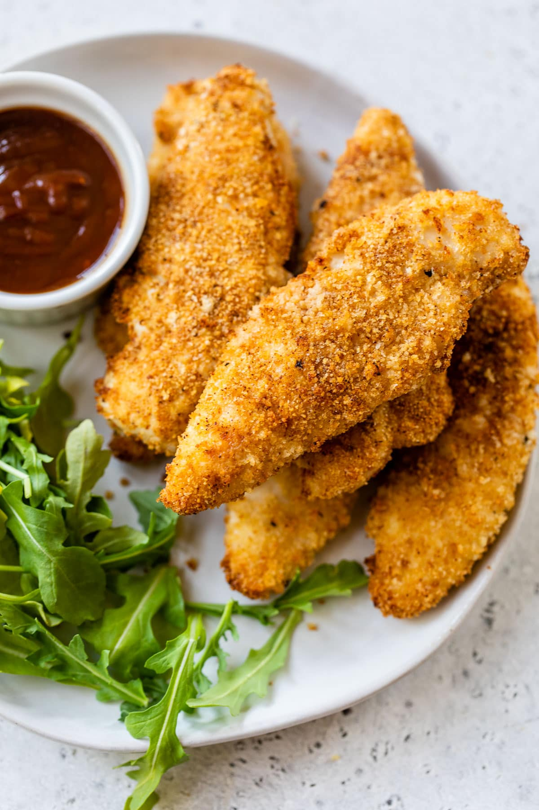

Classic finger food which we enjoy with a dipping sauce. The perfect
weekninght meal!
Air friers do a great job of cooking frozen food, no need to thaw. Enjoy
with a dipping sauce or as a tasty salad topper!
Ingredients
-
25 ounces frozen cooked, breaded crispy chicken strips (such as Tyson)
Steps
- Set the air fryer temperature to 380 degrees F (180 degrees C).
-
Place frozen chicken strips in the air fryer basket, without touching or
overcrowding.
-
Cook until crispy, 11 to 12 minutes. The color will not change much. You
may have to cook in batches depending on the size of your air fryer, and
cooking time may vary depending on the brand and size of your air fryer.
- Remove from the air fryer and serve immediately.
Cook's Tip
You do not need to spray the basket or the chicken strips with cooking
spray, flip the strips halfway through, or even preheat the air fryer. If
there are any leftovers, they can be reheated in the air fryer for 2 to 3
minutes.
Return to top
Return to main page